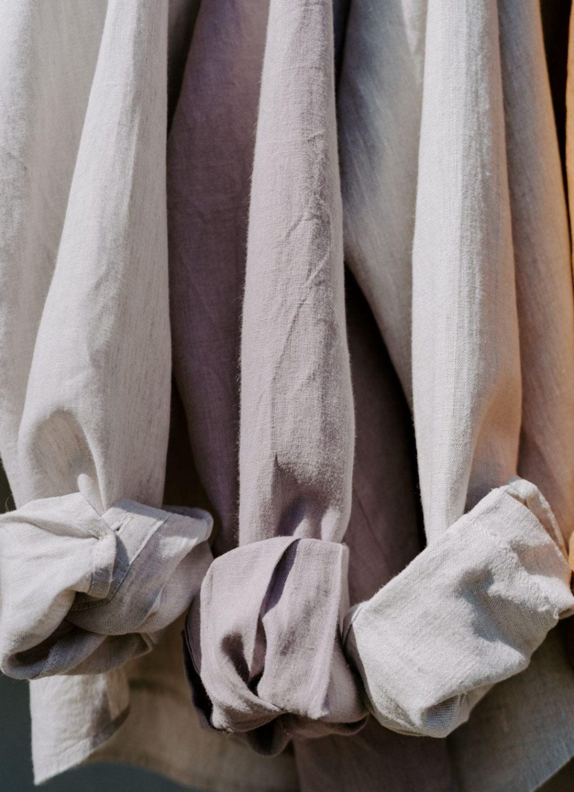

세탁 요금
세탁 요금은 26품목의 한 점 값과 영업일 기준으로 걸리는 날입니다.
갈래
세탁 방식
26품목 / 26
- 와이셔츠상의 · 물세탁 · 1일 · 옷걸이에 걸어 비닐을 씌운다2,500원
- 블라우스상의 · 드라이 · 2일4,500원
- 니트·스웨터상의 · 드라이 · 2일 · 개어서 돌려준다5,000원
- 실크 블라우스상의 · 웨트 · 3일7,000원
- 바지하의 · 드라이 · 2일4,000원
- 청바지하의 · 물세탁 · 2일 · 뒤집어 빤다4,000원
- 치마하의 · 드라이 · 2일4,000원
- 주름치마하의 · 드라이 · 3일 · 주름을 하나씩 잡아 다린다7,000원
- 정장 상하한 벌 · 드라이 · 2일9,000원
- 원피스한 벌 · 드라이 · 2일7,000원
- 교복 상하한 벌 · 드라이 · 2일8,000원
- 한복 저고리·치마한 벌 · 외부 전문 · 7일30,000원
- 재킷외투 · 드라이 · 2일6,000원
- 울 코트외투 · 드라이 · 3일12,000원
- 캐시미어 코트외투 · 드라이 · 3일16,000원
- 짧은 패딩외투 · 웨트 · 4일 · 충전재를 두드려 펴며 말린다14,000원
- 긴 패딩외투 · 웨트 · 4일 · 충전재를 두드려 펴며 말린다18,000원
- 가죽 재킷외투 · 외부 전문 · 10일45,000원
- 솜이불침구 · 물세탁 · 4일15,000원
- 거위털 이불침구 · 웨트 · 4일25,000원
- 베개 커버 2장침구 · 물세탁 · 1일3,000원
- 커튼(폭 1 m당)침구 · 물세탁 · 4일 · 고리는 떼어서 맡긴다4,000원
- 운동화신발과 소품 · 물세탁 · 3일6,000원
- 넥타이신발과 소품 · 드라이 · 2일3,000원
- 모자신발과 소품 · 웨트 · 3일5,000원
- 천 가방신발과 소품 · 웨트 · 4일12,000원
고른 조건에 맞는 품목이 없다. 갈래나 세탁 방식을 하나 덜어 본다.
값은 한 점 기준이다. 얼룩 부분 처리는 얼룩에 따로 적었다. 걸리는 날은 영업일로 센다.
세탁 방식 넷
- 물세탁
- 물과 세제로 빨아 말린 뒤 다린다. 와이셔츠·면·청바지·이불이 여기에 든다.
- 드라이
- 물 대신 석유계 용제로 빤다. 울·정장처럼 물에 줄거나 모양이 틀어지는 옷에 쓴다.
- 웨트
- 드라이 표시가 있는 옷을 물과 중성 세제로 짧게 빨고 눕혀 말린다. 땀과 물에 녹는 얼룩이 잘 빠진다.
- 외부 전문
- 가죽·모피·한복은 묵내동 밖 전문점에 맡긴다. 오가는 날이 더해진다.
